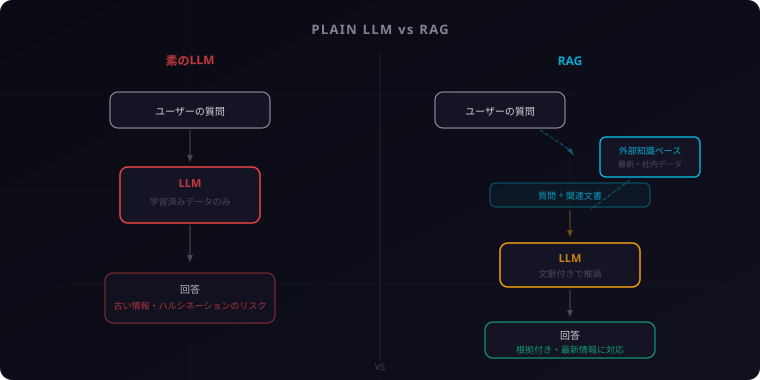
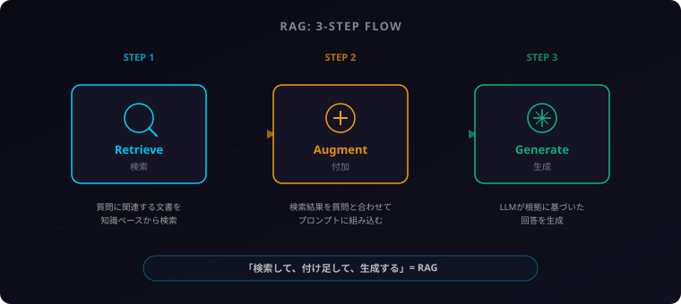
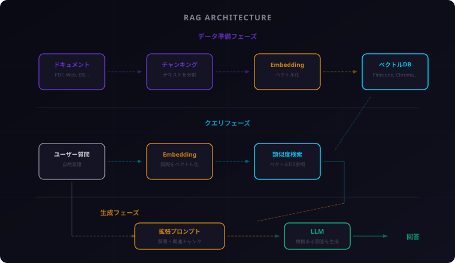

RAGとは何か？ ― AI検索拡張の仕組みをゼロから理解する完全ガイド
RAGを知ると、AIの使い方が変わります。今回はPrismと一緒に、検索拡張生成（RAG）の仕組みをゼロからわかりやすく解説します。「AIってすごいけど、なんか間違ったこと言うよね」——そんな疑問を持ったことがある人にこそ、読んでほしい記事です。

そうだね。RAGはいま企業のAI導入で最もホットなキーワードのひとつ。でも「なんとなく聞いたことはあるけど、ちゃんと理解できてない」という人が多い印象です。
まさにそこですね。今回は私が基本の流れをガイドしつつ、Prismに「なぜそうなるのか」「別の視点で見るとどうか」を深掘りしてもらいます。では、始めましょう。
1. LLMの「弱点」を知ろう
ChatGPTやClaudeのような大規模言語モデル（LLM）は、驚くほど自然な文章を生成します。質問すれば、まるで人間のように答えてくれる。でも、万能ではありません。
LLMには3つの構造的な弱点があります。
弱点1: ハルシネーション（幻覚）
LLMは「もっともらしいが事実ではない回答」を生成することがあります。これをハルシネーションと呼びます。存在しない論文を引用したり、架空の事実をさも本当のように語ったり。LLMは「知らない」と言うのが苦手なのです。
弱点2: 学習データの鮮度切れ
LLMの知識は学習データに依存します。学習が完了した時点で知識は「凍結」されるため、最新のニュースや情報には対応できません。「今日の天気」や「先週発表された新製品」について聞いても、正確な回答は期待できないのです。
弱点3: 社内情報を知らない
当然ですが、LLMはあなたの会社の社内マニュアルや顧客データを知りません。組織固有の知識にはアクセスできないのです。いくら優秀なAIでも、知らない情報は答えられません。
「AIは万能ではない」という前提を持つことが大事。弱点を知ることは、決してネガティブなことではなくて、むしろ正しく使うための第一歩です。
そうなんです。LLMの限界を知ってこそ、「じゃあどう補えばいいの？」という次の話——RAGの価値が見えてきます。
2. RAGとは何か
RAG（Retrieval-Augmented Generation）は、日本語で「検索拡張生成」と訳されます。2020年にMeta AI（旧Facebook AI Research）の研究チームが提唱した手法で、LLMの弱点を補うために生まれました。
一言でいえば、「LLMが回答する前に、関連する情報を外部から検索して渡してあげる仕組み」です。
「図書館の司書」に例えると
RAGの仕組みは、図書館の司書に例えるとわかりやすいでしょう。
あなたが「量子コンピュータについて教えて」と質問したとします。
- 素のLLM: 自分の記憶だけを頼りに答える。記憶が曖昧なら、それっぽいことを言ってしまう
- RAG付きLLM: まず図書館（知識ベース）に行って関連する本や論文を探し、それを読んでから答える。根拠のある回答ができる
つまりRAGは、LLMに「カンニングペーパーを渡す仕組み」とも言えます。ただし、これは悪いカンニングではなく、正確な情報に基づいて回答するための仕組みです。

「カンニングペーパー」の例え、伝わりましたか？ 要するにLLMが「自分の頭だけで答える」か、「資料を見てから答える」かの違いです。
別の角度から補足すると、人間だって仕事で何かを答えるとき、まず社内Wikiやマニュアルを確認しますよね。RAGはAIにも同じことをさせている、と考えるとしっくりくるかもしれません。
3. RAGの仕組み — 3ステップ
RAGの動作は、たった3つのステップで説明できます。
ステップ1: Retrieve（検索）
ユーザーの質問を受け取ったら、まず知識ベース（ドキュメントやデータベース）から関連する情報を検索します。キーワード検索ではなく、「意味的に近い」情報を探す類似度検索が使われることが多いです（詳しくは次のセクションで解説します）。
ステップ2: Augment（付加）
検索で見つかった関連文書を、ユーザーの質問と一緒にまとめます。「この文書を参考にして、以下の質問に答えてください」という形で、LLMへのプロンプトを拡張（Augment）するのです。
ステップ3: Generate（生成）
拡張されたプロンプトをLLMに渡し、関連文書を根拠にした回答を生成してもらいます。LLMは自分の記憶だけでなく、渡された文書の内容を踏まえて回答するため、ハルシネーションのリスクが大幅に減ります。
「検索して、付け足して、生成する」——この3ステップ、これだけ覚えればRAGの基本はOKです。Retrieve, Augment, Generateの頭文字でRAG。シンプルですよね。
シンプルだからこそ強力なんですよね。ただ、この「Augment」のステップが実は一番奥が深い。どのくらいの情報を、どういう形でLLMに渡すかで、回答の質が大きく変わります。

4. RAGを支える技術
RAGの3ステップはシンプルですが、その裏側にはいくつかの重要な技術が動いています。ひとつずつ見ていきましょう。
ベクトルデータベース（Vector DB）
RAGの知識ベースとして使われるのがベクトルデータベースです。Pinecone、Chroma、Weaviate、Qdrantなどが代表的なサービスです。
通常のデータベースがキーワードで検索するのに対し、ベクトルDBは「意味の近さ」で検索します。たとえば「犬」と「ペット」は文字列としては別物ですが、意味的には近い。ベクトルDBならこの関連性を捉えられるのです。
埋め込みモデル（Embedding Model）
テキストをベクトル（数値の配列）に変換するのが埋め込みモデルです。「こんにちは」という文章を [0.12, -0.45, 0.78, ...] のような数百〜数千次元のベクトルに変換します。
意味が似ているテキスト同士は、ベクトル空間上で近い位置に配置されます。これが類似度検索の基盤です。OpenAIの text-embedding-3 やGoogleの Gecko などが有名です。
チャンキング（Chunking）
長い文書をそのままベクトル化しても、検索精度が下がってしまいます。そこで、文書を適切な大きさの「チャンク」（断片）に分割する処理が必要です。
段落単位、文単位、トークン数単位など、分割方法はさまざま。適切なチャンクサイズの設計はRAGの性能に直結する重要なポイントです。
類似度検索（Similarity Search）
ユーザーの質問もベクトルに変換し、知識ベース内のチャンクベクトルとコサイン類似度などの指標で比較します。最も類似度が高い上位k件のチャンクを取得する——これが「Retrieve」ステップの実態です。
専門用語がたくさん出てきましたが、大丈夫ですか？ 要は「テキストを数値に変換して、意味の近さで検索する」というのが核心です。
その通り。そしてこのベクトル検索こそがRAGの心臓部。「何を聞いているか」を正しく理解し、「本当に関連する情報」を引っ張ってこられるかどうか——RAGの性能はほぼここで決まります。

5. RAGが活きる場面
RAGが特に力を発揮するのは、「最新の情報」や「固有の情報」が必要な場面です。具体的に見てみましょう。
社内FAQ・ナレッジベース
「経費精算のやり方は？」「リモートワークの申請方法は？」——こうした社内の質問に、社内ドキュメントをベースに正確に回答できます。人事部やIT部門の問い合わせ対応を大幅に効率化できるユースケースです。
カスタマーサポート
製品マニュアルやFAQデータベースを知識ベースとして、顧客からの問い合わせに自動回答。従来のキーワード検索では対応しきれなかった「言い回しの揺れ」にも対応できます。
法律・医療文書検索
膨大な判例や医学論文から、質問に関連する条文や知見を引き出して回答。専門家の調査業務を支援するツールとして導入が進んでいます。
最新ニュース要約
ニュースサイトやRSSフィードを知識ベースに取り込むことで、LLMの学習データにない最新の出来事についても正確に回答できるようになります。
自分の仕事に当てはめてみてください。「ドキュメントを探して、読んで、まとめる」作業があるなら、それはRAGで効率化できる可能性が高いです。
面白いのは、RAGの活用場面がほぼ「人間が日常的にやっている知的作業」と重なること。逆に言うと、RAGが苦手な領域は「正解のない創造的判断」。使い分けが大事ですね。
6. RAGの限界と進化
RAGは強力な手法ですが、万能ではありません。現時点での課題と、それを乗り越えるための進化の方向を見ておきましょう。
検索精度の課題
RAGの回答品質は、検索ステップの精度に大きく依存します。関連性の低い文書を取得してしまえば、LLMの回答もピントがずれます。特に質問が曖昧な場合や、専門用語の表記揺れがある場合に精度が落ちやすいです。
チャンク設計の難しさ
チャンクが小さすぎると文脈が失われ、大きすぎるとノイズが増える。最適なチャンクサイズはデータの性質によって異なるため、一律の正解がありません。実験と調整を繰り返す必要があります。
マルチモーダルRAG
テキストだけでなく、画像・表・グラフなどを含むドキュメントへの対応が進んでいます。マルチモーダルRAGは、視覚的な情報も検索・参照できるようにする次世代の手法です。
GraphRAG
Microsoft Researchが提唱したGraphRAGは、ベクトル検索にナレッジグラフ（知識の構造化）を組み合わせたアプローチです。エンティティ間の関係性を活用することで、複雑な質問への回答精度を高めます。
「限界がある」と聞くと不安になるかもしれませんが、大丈夫。どんな技術にも限界はあります。大事なのは、それを知ったうえで使うことです。
そう、RAGは「完成形」ではなく「進化の途中」にある技術です。GraphRAG、マルチモーダル対応、Agentic RAG——次々と新しいアプローチが生まれている。今の基本を押さえておけば、その進化についていけます。
7. まとめ
この記事で解説したRAGの要点を3つにまとめます。
- RAGは「検索 + 生成」の仕組み: LLMが回答する前に外部知識ベースから関連情報を検索し、それを根拠に回答を生成する。ハルシネーションの抑制と最新情報への対応が可能になる
- 3ステップで動く: Retrieve（検索）→ Augment（付加）→ Generate（生成）。このシンプルな流れがRAGの核心
- ベクトル検索が鍵: 埋め込みモデル、ベクトルDB、チャンキング、類似度検索——これらの技術がRAGの精度を支えている
さらに学ぶためのキーワード
| キーワード | ひとこと説明 |
|---|---|
| Embedding | テキストを数値ベクトルに変換する技術 |
| Vector Database | ベクトルの類似度検索に特化したデータベース |
| Chunking Strategy | 文書を適切なサイズに分割する設計方針 |
| Reranking | 検索結果の関連度を再評価して精度を上げる手法 |
| GraphRAG | ナレッジグラフとRAGを組み合わせたアプローチ |
| Agentic RAG | AIエージェントが検索戦略を自律的に決定するRAG |
RAGの基礎、しっかり掴めたでしょうか？ ここから先は、実際にベクトルDBを触ってみたり、小さなRAGシステムを作ってみたりすると、理解がぐっと深まるはずです。一歩ずつ進みましょう。
Compassのガイド、わかりやすかったですね。最後にひとつだけ補足を。RAGは技術としてだけでなく、「AIに何を任せ、何を人間が判断するか」という問いへのひとつの回答でもあります。ぜひ別の角度からも見てみてください。
Prism、今回もいい深掘りをありがとう。読者のみなさん、また次の記事でお会いしましょう。
Prism、今回は「RAG」がテーマです。最近AIの記事を読んでると頻繁に出てくるワードですよね。